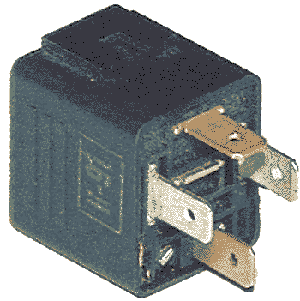
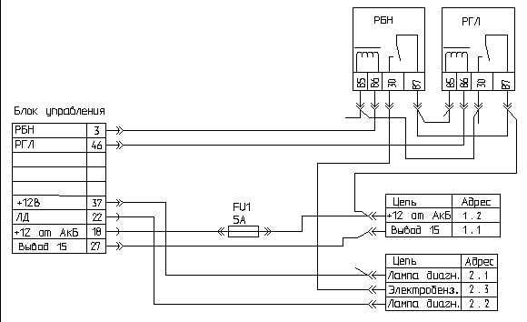

главная → ЭСУД ГАЗ
Реле силового управления 90.3747-10 (РФ)
Назначение электромеханизма. Принцип действия
- В системе управления двигателем установлены два силовых реле: реле главное и реле электробензонасоса.
- Реле главное предназначено для подачи напряжения бортсети на все исполнительные электромеханизмы и датчики системы, которые имеют номинальное напряжение питания 12В.
- Реле электробензонасоса предназначено для подачи электропитания на электробензонасос.
- Оба реле унифицированы по конструкции и предназначены для управления силовыми цепями до 30А. Реле электромагнитного типа с нормально разокнутыми контактами. Включение реле выполняется сигналом от блока управления, близким к массе.
- Силовая цепь реле главного, идущая от аккумулятора, защищена от коротких замыканий на массу плавким предохранителем на 20 А, а силовая цепь от выключателя зажигания—защищена плавким предохранителем на 10А (для автомобилей УАЗ).
Конструкция электромеханизма

- Конструктивно силовое реле включает:
- изолированное основание с четырьмя запресованными штырями «6,3»-серии и установленной на основании катушкой электромагнита с якорем и подвижным подпружиненным контактом-коромыслом;
- пластмассовый корпус, запрессованный по контуру основания.
- В магнитопроводе выполнены четыре отверстия для крепления катушки винтами (болтами) М5.
Параметры электромеханизма
- Диапазон электропитания: 8...16В.
- Номинальное напряжение: 12В.
- Ток управления: не более 0,2А.
- Напряжение срабатывания: не менее 8,0В.
- Напряжение отпускания: 1,5...5,0В.
- Максимальный ток в силовой цепи: 30А.
- Активное сопротивление обмотки: 80±10 Ом.
Установка и монтаж электромеханизма на автомобиле
- Реле главное и реле электробензонасоса устанавливаются на щитке передка над двигателем.
- Подключение реле к жгуту проводов производится посредством четырехконтактных розеток.
- Для автомобилей УАЗ на колодках реле дополнительно крепятся колодки с плавкими ножевыми предохранителями:
- 20А—на колодке реле главного;
- 10А—на колодке реле электробензонасоса.
- Видимого внешнего отличичия реле не имеют. Основным ориентиром могут являться два фактора:
- к колодке реле главного подходят провода большего сечения;
- после включения зажигания реле электробензонасоса выключается примерно через пять секунд (если нет включения стартера), и, если приложить руку к корпусу реле, то вы почувствуете при его выключении короткий щелчок.
Аналоги электромеханизма
- Реле автомобильное типа 90.3747-10 (в пластмассовом корпусе без фланца крепления, на 12В-30А) имеет аналоги:
- 90.3747—в пластмассовом корпусе с фланцем крепления;
- 113.3747—в металлическом корпусе с фланцем крепления;
- 113.3747-10—в металлическом корпусе без фланца крепления;
- 111.3747—в металлическом корпусе с фланцем крепления;
- 111.3747-10—в металлическом корпусе без фланца крепления.
Внешние проявления неисправностей цепей электромеханизма
Схема включения реле на автомобиле ГАЗ.

Схема включения реле главного на автомобиле УАЗ.

Схема включения реле электробензонасоса.

- Лампа неисправности не горит после включения зажигания. Электробензонасос не включается. Самодиагностика фиксирует коды неисправности 177...179.
- Проверьте исправность цепей реле главного 58, 18, 18а, 18б, 18в, 46.
- Лампа неисправности горит после включения зажигания. Электробензонасос не включается. Самодиагностика фиксирует коды неисправности 167...169. Проверьте исправность цепей:
- реле электробензонасоса—18г, 37в, 3;
- электробензонасоса—57, 56.
|